The Basics of Speech and Natural Language Processing
Kevin Feasel (@feaselkl)https://csmore.info/on/basicsofnlp
Who Am I? What Am I Doing Here?


Motivation
My goals in this talk:
- Provide an overview of the field of natural language processing (NLP)
- Introduce the SpaCy and NLTK Python libraries
- Discuss linguistics vis-a-vis NLP
- Briefly describe the move to vectors as tokens
What We'll Do
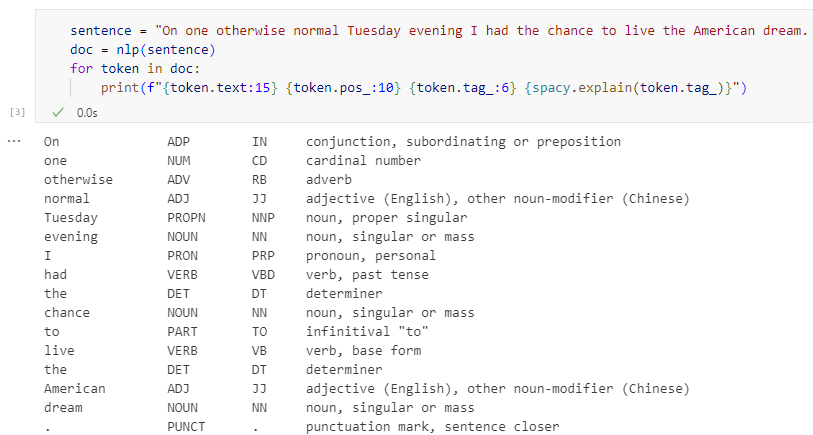
What We'll Do
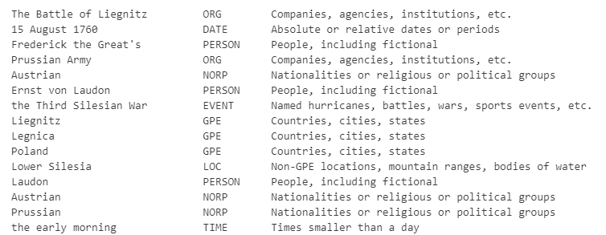
What We'll Do
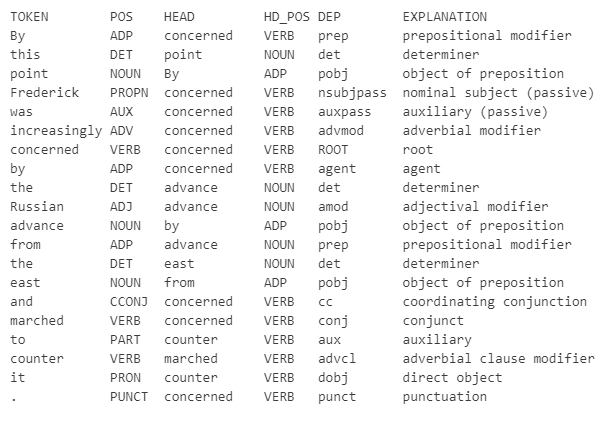
What We'll Do
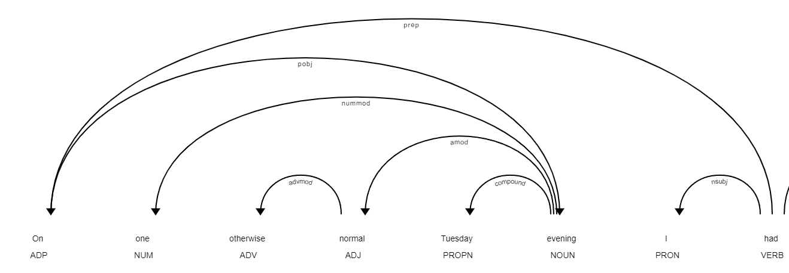
What We'll Do
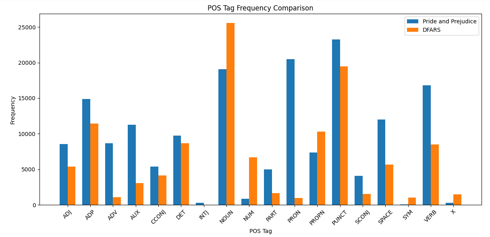
Agenda
- Words are Hard
- What is Natural Language Processing?
- An Introduction to SpaCy
- NLTK: A Historical Perspective
- Linguistics and NLP
- From Tags to Vectors
Why Should We Care?
We deal with data every day, including natural language text.
There are a variety of tasks relevant to us, like extracting structured information from unstructured text (e.g., topic extraction from whitepapers), automation, and document search.
In order to perform these tasks, we--or the computers we are running--need to be able to parse and extract information from this text.
Sentence Diagramming Like We're Eight Again
You can use a technique known as sentence diagramming to break sentences down into their key components. This is an example of diagramming using the Reed-Kellogg system.
Start with the following sentence:
The dog brought me his old ball in the morning.
Sentence Diagramming Like We're Eight Again
The dog brought me his old ball in the morning.
Step 1: Diagram the subject noun and main predicate verb
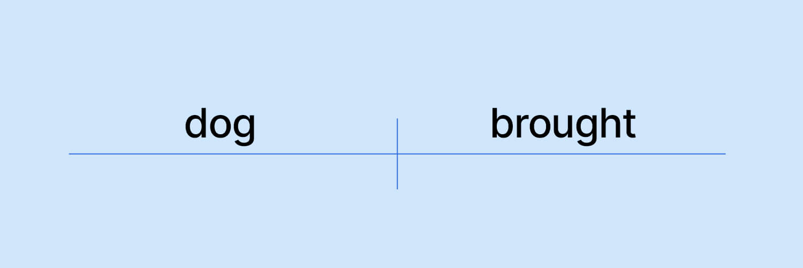
Sentence Diagramming Like We're Eight Again
The dog brought me his old ball in the morning.
Step 2: Add the direct object
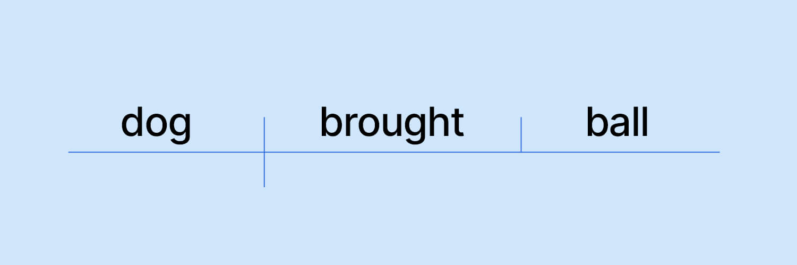
Sentence Diagramming Like We're Eight Again
The dog brought me his old ball in the morning.
Step 3: Add indirect object(s)
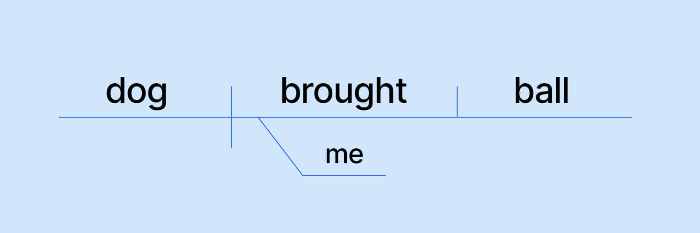
Sentence Diagramming Like We're Eight Again
The dog brought me his old ball in the morning.
Step 4: Add prepositional phrases
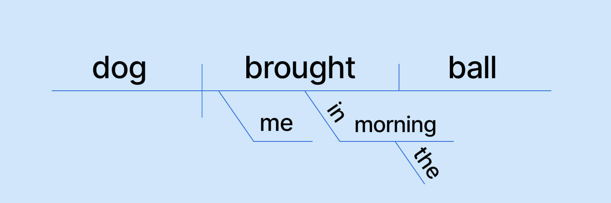
Sentence Diagramming Like We're Eight Again
The dog brought me his old ball in the morning.
Step 5: Add modifiers and articles
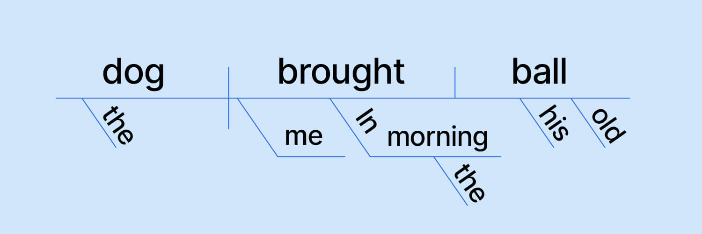
Key Terms in Language
Here are some of the key terms you will often see in natural language processing discussions or the literature.
- Semantics - The study of meaning in language
- Syntax - The rules governing valid word combinations
- Morpheme - The base unit of a word. Ex: "run"
- Morphology - The study of word formation, starting with morphemes and including prefixes, suffixes, gerunds, etc. Ex: "runs," "running," "runner"
- Pragmatics - How context influences meaning, including speaker intent, social cues, and shared knowledge. Ex: "Ich bin ein Esel, Friedrich der Zweite"
(More) Key Terms in Language
- Semiotics - The study of signs and symbols, including not just language but also visual cues and gestures
- Discourse Analysis - The study of how sentences relate to each other and provide a coherent meaning. Critical for summarization and dialogue
- Co-reference Resolution - Identifying which words or phrases in a document belong to the same entity
- Token - An individual word, punctuation mark, or fragment of a word
- Part of speech - The grammatical label for a given word or token. Ex: noun, verb, adjective
Agenda
- Words are Hard
- What is Natural Language Processing?
- An Introduction to SpaCy
- NLTK: A Historical Perspective
- Linguistics and NLP
- From Tags to Vectors
Natural Language Processing
Natural language processing is a field within artificial intelligence, with the goal of recognizing and analyzing text and speech.
We use a variety of techniques to do this, including computational linguistics, rule-based modeling of human languages, statistical modeling of languages, machine learning, and deep learning.
A Quick Warning
Modern natural language processing builds heavily on top of neural networks and deep learning techniques.
We will not get into neural network architectures or detailed descriptions of the topic in this talk. This is a beginner-level NLP talk!
Use Cases for NLP
Natural language processing enables us to perform a variety of tasks, including but not limited to:
- Sentiment analysis - Understanding the emotions behind a block of text
- Topic modeling - Find a common theme in a set of documents
- Machine translation - Automatically translating a document from one language into another
- Extractive summarization - Pull the most important words or sentences from a document
- Abstractive summarization - Generate new text describing the primary theme of a document
The Challenges of NLP
Natural language processing brings with it a series of challenges, including but not limited to:
- The importance of context ("that thing I told you about last week")
- Ambiguity in term ("buffalo" and my favorite sentence in the English language)
- Ambiguity in meaning ("just around the corner")
- Sarcasm or irony ("ooh, a sarcasm detector, that's a really useful invention")
- Metaphors and idioms ("it's raining cats and dogs")
- Slang and informal language
Agenda
- Words are Hard
- What is Natural Language Processing?
- An Introduction to SpaCy
- NLTK: A Historical Perspective
- Linguistics and NLP
- From Tags to Vectors
What Is SpaCy?
SpaCy is a Python library for natural language processing.
It is designed to be fast, efficient, and easy to use.
It is not an API, software-as-a-service product, or chat bot engine.
Why Use SpaCy?
Key benefits of spaCy include:
- Free and open-source
- Supports 75+ languages
- Enables part of speech tagging and visualization of results
- Supports named entity recognition
- "Pythonic" interface
Demo Time
Agenda
- Words are Hard
- What is Natural Language Processing?
- An Introduction to SpaCy
- NLTK: A Historical Perspective
- Linguistics and NLP
- From Tags to Vectors
NLTK's Historical Role
The Natural Language Toolkit (NLTK) is another open-source Python library for natural language processing.
NLTK is more research-friendly, emphasizing the ability to play with natural language over production speed.
SpaCy vs NLTK
Why do we focus on spaCy in this talk?
| NLTK | SpaCy |
|---|---|
| Research-oriented | Production-oriented |
| Slower | Faster |
| More complex API | Simpler API |
| More features | Fewer features |
When NLTK Makes Sense
NLTK is still a great choice for:
- Exploratory data analysis of natural language documents
- Linguistic research
- Educational purposes (e.g., computational linguistics courses)
Agenda
- Words are Hard
- What is Natural Language Processing?
- An Introduction to SpaCy
- NLTK: A Historical Perspective
- Linguistics and NLP
- From Tags to Vectors
Do We Need a Linguistics Background?
Do We Need a Linguistics Background?
Some foundation in how natural languages work can be helpful when dealing with natural language processing. Not only does this help you understand the reason why you perform specific tasks, but can also point you toward structured ways of thinking about the problem.
This does not mean you need a PhD in linguistics, or even formal training in the field!
Ways to Get Started with Linguistics
- Khan Academy has an introduction to grammar in standard American English
- edX has a variety of free courses for learning linguistics
- Textbooks like Language Files: Materials for an Introduction to Language and Linguistics (13th Edition)
- General audience books like How Language Works by David Crystal
Tips for Learning Linguistics
- Linguistics is a very broad field. Focus on the sub-fields most relevant to NLP: syntax, semantics, morphology
- Relate it to specific tasks to lock in that knowledge
- Eat the elephant--start with the basics and gradually expand knowledge as you need it (or find it interesting!)
- Experiment with spaCy and NLTK along the way
Agenda
- Words are Hard
- What is Natural Language Processing?
- An Introduction to SpaCy
- NLTK: A Historical Perspective
- Linguistics and NLP
- From Tags to Vectors
A Reminder of Traditional NLP
Most of the work we've done so far involves parts of speech and a syntactic understanding of language. This is the domain of traditional natural language processing and is still very useful today.
But it does lead to certain problems.
The Semantic Problem in NLP
Traditional natural language processing relies on a syntactic understanding of language. This is great for many tasks, but it doesn't help us with the semantic meaning of a word.
For example, the word "bank" can refer to a financial institution, the side of a river, or a place to store something.
We also lack the ability to perform semantic comparisons: wolf is to dog as tiger is to ___?
We need a way to represent the meaning of a word in a way that is more flexible and can be used for a variety of tasks.
Word2Vec
In 2013, Tomas Mikolov and his team at Google released a paper entitled Efficient Estimation of Word Representations in Vector Space. In this paper, they introduce Word2Vec.
Word2Vec is a technique for representing words as vectors in a high-dimensional space. This allows us to perform semantic comparisons and find similar words.
Word2Vec
The key intuition is that we can represent words as dense vectors in a continuous vector space.
Vectors retain some amount of their semantic meaning in that vector space.
Word2Vec and Vector Space
The key intuition is that we can represent words as dense vectors in a continuous vector space. "Vector space" is a fancy term for representing something as a fixed-size list of numbers.
How We Vectorize
Word2Vec introduced two techniques: Skip-Gram and Continuous Bag of Words.
Skip-Gram: Given a word, predict the surrounding words in a sentence.
___ score ___ ___ ___ ___ -> "Four score and seven years ago"
How We Vectorize
Word2Vec introduced two techniques: Skip-Gram and Continuous Bag of Words.
Skip-Gram: Given a word, predict the surrounding words in a sentence.
Continuous Bag of Words: Given a set of surrounding words, predict the word in the middle.
Four ___ and seven years ago -> "score"
Why Vectors Matter
We can perform mathematical operations on vectors, such as adding, subtracting, multiplying and dividing them.
The classic Word2Vec formulation is: "King - Man + Woman = ??"
Why Vectors Matter
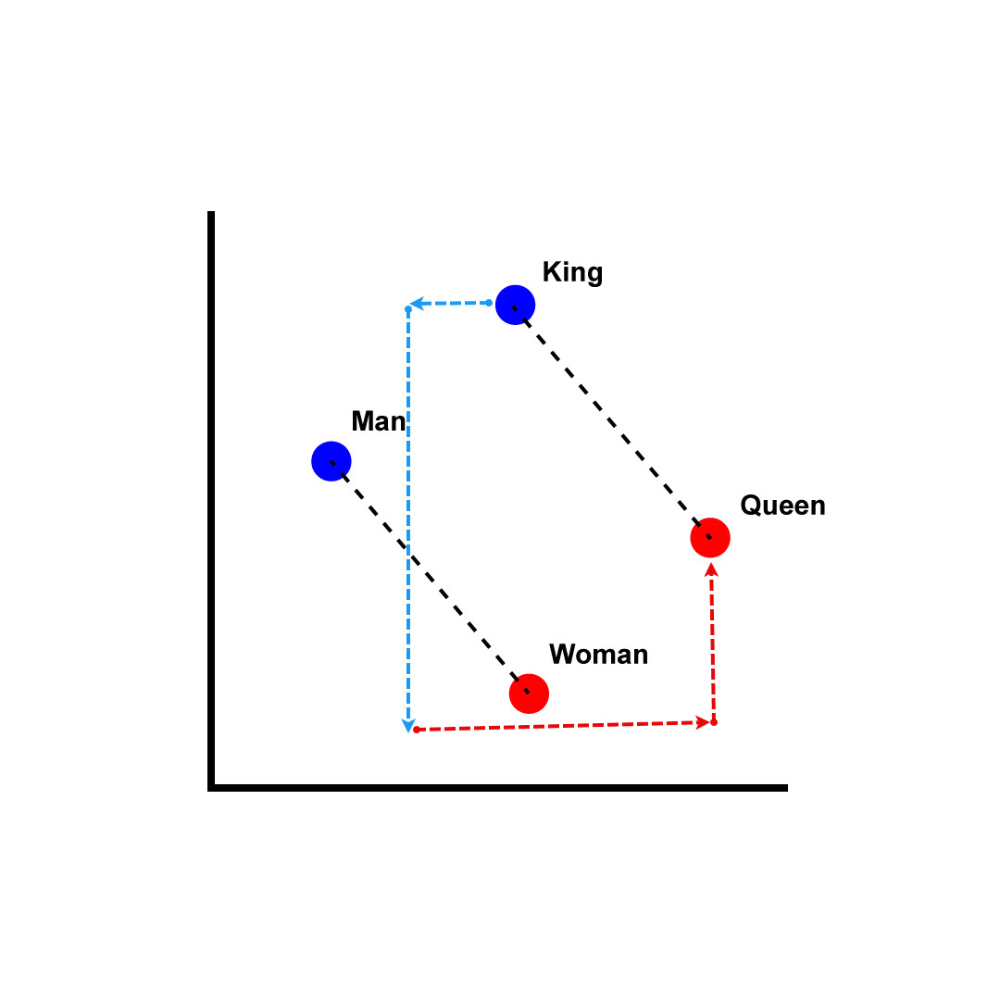
From Vectors to Embeddings
Word2Vec shocked the natural language processing community when the paper first came out. Since then, the biggest development has been in vector space.
Embedding techniques like GloVe, FastText, and BERT are able to capture even more semantic information.
From Vectors to Embeddings
Vectorization is the process of translating data into numerical vectors.
Embeddings are learned vector representations of words, phrases, or even entire documents.
We generate embeddings using neural network models trained on large datasets of text. The model learns to position similar ideas close together in vector space.
From Vectors to Embeddings
Embeddings also allow us to use techniques like cosine similarity to determine how similar two vectors are. This ties back to a semantic similarity between concepts.

Wrapping Up
Over the course of this talk, we gained a high-level understanding of what natural language processing is. We looked at one very popular NLP library in spaCy and saw how NLP has transitioned from a syntax-heavy approach to a semantics-heavy approach thanks to vectorization and embeddings.
Wrapping Up
To learn more, go here:
https://csmore.info/on/basicsofnlp
And for help, contact me:
feasel@catallaxyservices.com | @feaselkl
Catallaxy Services consulting:
https://CSmore.info/contact